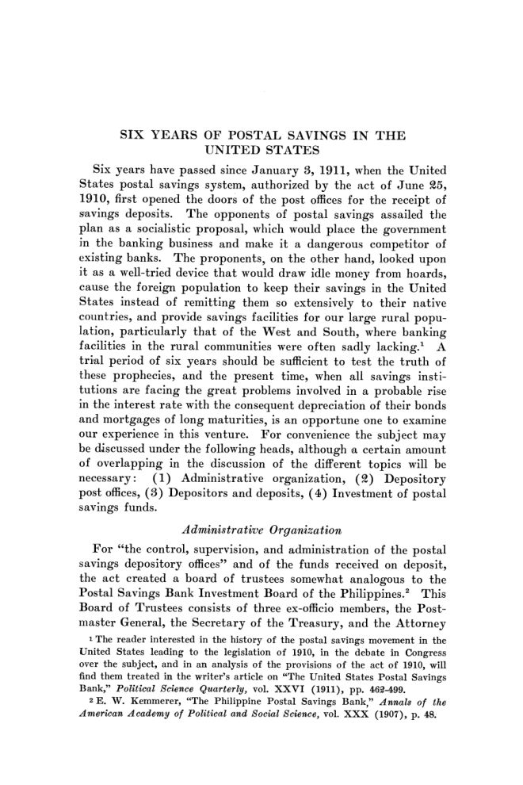

Kemmerer, 1917: seis anos de poupança nos correios
Leitura: 8 min
E. W. Kemmerer avalia os seis primeiros anos da poupança postal americana: o excesso de agências, os limites aos depósitos, os juros que os depositantes perdem e a regra de manter o dinheiro em casa.


Em 7 de julho de 1913, o First-Second National Bank, de Pittsburgh, fechou as portas. Na semana seguinte, os correios da cidade receberam US$ 19.624 em depósitos de poupança, mais do que costumavam receber num mês inteiro. Muitos depositantes queriam deixar de US$ 1.000 a US$ 9.000; alguns, ao saber que só podiam depositar US$ 100, foram embora sem abrir conta. O agente postal estimou que o total oferecido e recusado passou de US$ 100 mil.
O episódio é um dos casos que E. W. Kemmerer, da Princeton University, reúne no balanço dos seis primeiros anos da poupança postal dos Estados Unidos, publicado no número de março de 1917 da American Economic Review. O sistema, autorizado pela lei de 25 de junho de 1910, começara a receber depósitos em 3 de janeiro de 1911. Kemmerer o examina em quatro partes: organização, agências, depositantes e depósitos, e investimento dos fundos.
Como o sistema foi organizado?
A lei criou um conselho de curadores com três membros natos: o Postmaster General, o secretário do Tesouro e o Attorney General, representando o lado administrativo, o financeiro e o jurídico. Como os três tinham dificuldade de se reunir, uma lei de março de 1911 deu ao Postmaster General a escolha das agências e as regras de depósito e saque; o investimento ficou com o conselho. Em 1913, o serviço passou a uma Divisão de Poupança Postal, subordinada ao Third Assistant Postmaster General.
A expansão foi rápida demais. No fim do ano fiscal de 1913 havia postos em 12.151 agências e 667 filiais. O deputado William H. Stafford mostrou que, das 4.000 agências de quarta classe designadas, 3.000 não tinham depósitos ou tinham apenas um dólar, e a remuneração média dos agentes nesses casos era de 27 centavos por ano, enquanto cada uma exigia contas e auditorias próprias. Muitas foram fechadas; em 30 de junho de 1916 restavam 8.421.
Quem eram os depositantes?
Qualquer pessoa a partir dos dez anos podia abrir uma conta, com depósitos de um dólar ou múltiplos; cartões com selos de dez centavos permitiam juntar o primeiro dólar. Em vez de caderneta, o depositante recebia certificados. A lei de 1910 limitava o saldo a US$ 500 e os depósitos a US$ 100 por mês. Segundo o diretor Carter B. Keene, em setembro de 1916 cerca de 375 mil depositantes, 60% do total, tinham nascido fora dos Estados Unidos e detinham três quartos dos depósitos.
A distribuição geográfica era muito desigual. Em 30 de junho de 1916, havia um depositante para cada 153 habitantes no país, mas a proporção ia de um para 36 em Nevada a um para 5.550 na Carolina do Sul. Oito estados, liderados por Nova York e Pensilvânia, tinham 70% dos depósitos, e as 76 localidades com mais de US$ 100 mil depositados, com 22% da população, concentravam 67% deles. Os maiores depósitos por habitante estavam em pequenas cidades de mineração e de indústria.
Os correios tiraram dinheiro dos bancos?
Os banqueiros tinham temido que sim. Kemmerer conclui que não há evidência de concorrência apreciável: os agentes postais relatavam quase unanimemente que o dinheiro vinha de esconderijos, como mostravam as moedas manchadas e os recipientes em que chegava, e de fundos antes enviados a bancos europeus. Keene relatou que uma pesquisa não encontrou nenhum depositante que tivesse trocado, em condições normais, o banco pelo correio; ao contrário, contas migravam dos correios para os bancos locais.
“O sistema de poupança postal é uma escola adequada para as outras instituições de poupança.” (“The postal savings system is a fitting school for other savings institutions.”)
Também o temor de que os correios estimulassem corridas aos bancos não se confirmou: os poucos casos, como o de Pittsburgh, ocorreram depois de falências locais, e o dinheiro recebido voltou imediatamente aos bancos da cidade. O sistema ainda substituiu um costume caro: antes de 1911, pessoas compravam ordens de pagamento para si mesmas só para deixar o dinheiro sob a guarda do governo.
Por que os limites de depósito foram afrouxados?
O limite de US$ 500 mandava dinheiro de volta aos esconderijos. Em dezembro de 1915, mais de 30 mil depositantes já o tinham atingido, e o diretor Reed estimara em pelo menos US$ 30 milhões o que fora recusado. Um projeto do deputado Moon, aprovado em 1914, foi vetado pelo presidente Wilson por outro motivo, a permissão de depositar fundos em bancos fora do sistema da reserva federal. Contra o afrouxamento, argumentava-se que o sistema passaria a concorrer com os bancos de poupança e que facilitaria a fuga de credores e de impostos.
Retirada a oposição organizada dos banqueiros, a lei de 18 de maio de 1916 eliminou o limite mensal e elevou o saldo com juros a US$ 1.000, permitindo ainda mais US$ 1.000 sem juros, faculdade que o conselho não havia usado. Os depósitos, de US$ 20,2 milhões em 1912, chegaram a US$ 86 milhões em junho de 1916 e a cerca de US$ 108,5 milhões em novembro.
Quanto os depositantes recebem de juros?
A lei fixou juros de 2% ao ano, a taxa mais baixa entre os sistemas postais do mundo, embora os juros nos Estados Unidos fossem mais altos que na maioria dos países avançados. O conselho proibiu juros compostos e decidiu não pagar juros sobre dinheiro depositado por menos de um ano inteiro nem sobre frações de ano. Como 62% dos depósitos eram sacados antes de um ano, a perda era grande.
Kemmerer vê nisso uma má política social, porque o lucro vem dos pobres que poupam. Pede juros sobre saldos semestrais ou trimestrais e um meio simples de transferir a conta quando o depositante muda de cidade, sem perder os juros acumulados.
Para onde vai o dinheiro?
Nos outros países, os fundos postais costumavam ir para a dívida pública, mas a dívida americana era pequena e estava presa à emissão de notas bancárias. A lei exigiu um fundo de reserva de 5% no Tesouro, permitiu aplicar até 30% em títulos federais e mandou depositar o resto nos bancos das próprias localidades, mediante garantia. Na prática, mais de 90% ficaram em bancos, e quase nada foi para títulos.
Para Kemmerer, a ideia de manter o dinheiro em casa significava apenas entregar o lucro dos fundos aos bancos locais. Como em 1916 a cidade de Nova York tinha 24% dos depósitos, e 86% dos títulos de poupança postal emitidos eram nominativos, comprados para investimento permanente, ele conclui que os fundos se parecem mais com capital que com fundos de giro. Propõe usar mais os bancos de poupança mútua como depositários, o que os ajudaria num período de juros em alta.
Na minha leitura
Na minha leitura, o artigo é um estudo de como regras de detalhe definem o resultado de uma política. O mesmo sistema que deveria estimular a poupança pagava a menor taxa do mundo, cortava os juros de quem sacava antes de um ano e recusava o dinheiro acima de US$ 500; o efeito combinado foi transformar a poupança dos pequenos depositantes em lucro do governo e devolver parte do dinheiro aos esconderijos. Kemmerer mede cada regra pelo custo que ela impõe, e não pela intenção declarada.
A outra lição está na alocação dos fundos. A regra de manter o dinheiro na localidade nasceu de um acordo político com os bancos locais, mas contrariava a mobilidade de crédito que a reforma bancária da época procurava criar. Ao propor os bancos de poupança como depositários, Kemmerer aplica um critério econômico simples: fundos de prazo longo devem financiar aplicações de prazo longo.
Glossário
- Poupança postal
- sistema público de depósitos de poupança recebidos nas agências dos correios.
- Conselho de curadores
- órgão formado pelo Postmaster General, pelo secretário do Tesouro e pelo Attorney General que administrava os fundos.
- Banco depositário
- banco que recebe, contra garantia, os fundos da poupança postal.
- Juros compostos
- juros calculados também sobre os juros já creditados.
- Fundo de reserva
- parcela de 5% dos depósitos mantida em dinheiro no Tesouro.
- Título nominativo
- título registrado em nome do dono, em vez de pagável ao portador.
- Banco de poupança mútua
- banco de poupança sem acionistas, administrado em benefício dos depositantes.
- Entesouramento
- guarda de dinheiro fora do sistema bancário, sem render juros.
Fontes
- Six Years of Postal Savings in the United States — E. W. Kemmerer (Princeton University) (pp. 46–90). JSTOR · Internet Archive (PDF)
- Edição completa, com os demais artigos: Nº 145 do Arquivo.
Documento em domínio público (EUA, publicado antes de 1931), via JSTOR Early Journal Content e Internet Archive. Resumo e comentário do autor deste site, sem afiliação com a American Economic Association. Encontrou um erro? Escreva: a correção é publicada no próprio texto, com data.
← Davenport, 1917: o imposto único entre o princípio e a confiscação ↑ Nº 145 · O imposto único em teoria, a poupança postal e o dólar comercial